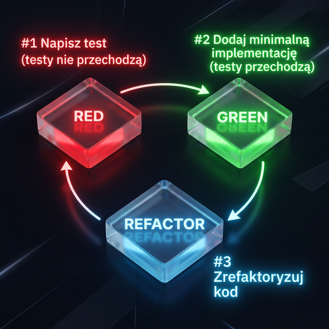

L#03: TDD.
Testowanie oprogramowania to nie tylko weryfikacja gotowego kodu. W nowoczesnym podejściu proces ten potrafi dyktować architekturę samej aplikacji, gwarantując, że każdy napisany fragment kodu bezpośrednio realizuje założone odgórnie wymagania biznesowe i jest od samego początku pokryty testami.
Głównym celem laboratorium jest opanowanie techniki Test-Driven Development (TDD) oraz wdrożenie w praktyce cyklu wytwarzania oprogramowania Red-Green-Refactor. Będziemy trenować krok po kroku pisanie testów przed kodem produkcyjnym i refaktoryzację rozwiązań.
TDD, czyli Test-Driven Development jest to technika tworzenia oprogramowania, w której najpierw tworzone są testy dla nowej funkcjonalności, a dopiero później implementowana jest sama funkcjonalność, aby testy przeszły pomyślnie. Proces ten składa się z 3 głównych kroków.
Technika została stworzona przez Kenta Becka.

Poniższy film prezentuje technikę TDD w praktyce. Przepisz kod, dopisz brakujące testy (dodawanie wielu zadań oraz usuwanie zadania). Zaktualizuj implementację klasy TaskList zgodnie z poznaną techniką.
Powyższy przykład demonstruje użycie TDD (Test-Driven Development) w Pythonie. Zaczynamy od napisania testu (RED), który opisuje oczekiwane zachowanie kodu, który jeszcze nie istnieje. Następnie piszemy minimalną implementację (GREEN), która sprawia, że test przechodzi. Na koniec refaktoryzujemy kod (REFACTOR), aby poprawić jego jakość, nie zmieniając jego funkcjonalności.
System zarządzania studentami AT
Twoim zadaniem będzie implementacja programu zarządzającego studentami przy użyciu techniki TDD (ang. Test-Driven Development). Aplikacja powinna umożliwiać dodawanie, aktualizowanie, usuwanie studentów, wprowadzanie ocen oraz obliczanie średniej ocen z przedmiotu.
Kod początkowy projektu:
# student_management.py
class StudentManagement:
"""
Klasa zarządzająca studentami i ich ocenami.
"""
def add_student(self, student_id: str, name: str, age: int) -> bool:
"""
Dodaje nowego studenta do bazy danych.
Args:
student_id: unikalny identyfikator studenta.
name: imię studenta.
age: wiek studenta.
Returns:
True, jeśli dodanie zakończyło się sukcesem.
False w przeciwnym wypadku.
"""
pass # Implementacja dodawania studenta
def update_student(self, student_id: str, name: str, age: int) -> bool:
"""
Aktualizuje dane istniejącego studenta na podstawie identyfikatora.
Args:
student_id: unikalny identyfikator studenta.
name: imię studenta.
age: wiek studenta.
Returns:
True, jeśli aktualizacja zakończyła się sukcesem.
False w przeciwnym wypadku.
"""
pass # Implementacja aktualizacji studenta
def remove_student(self, student_id: str) -> bool:
"""
Usuwa studenta z bazy danych na podstawie jego identyfikatora.
Args:
student_id: unikalny identyfikator studenta.
Returns:
True, jeśli usunięcie zakończyło się sukcesem.
False w przeciwnym wypadku.
"""
pass # Implementacja usuwania studenta
def add_grade(self, student_id: str, subject: str, grade: float) -> bool:
"""
Dodaje ocenę z danego przedmiotu dla określonego studenta.
Args:
student_id: unikalny identyfikator studenta.
subject: nazwa przedmiotu.
grade: ocena.
Returns:
True, jeśli dodanie oceny zakończyło się sukcesem (2.0, 3.0, 3.5, 4.0, 4.5, 5.0).
False w przeciwnym razie.
"""
pass # Implementacja dodawania oceny
def avg_grades(self, subject: str) -> float:
"""
Oblicza średnią ocen z danego przedmiotu dla wszystkich studentów.
Args:
subject: nazwa przedmiotu.
Returns:
Średnia ocen z przedmiotu jako liczba zmiennoprzecinkowa.
"""
pass # Implementacja obliczania średniej ocen
Dzięki technice TDD twój kod zyska na jakości, będzie lepiej przetestowany, a Ty nabierzesz pewności, dodając nowe funkcjonalności lub wprowadzając refaktoryzację. Pamiętaj o cyklu Red-Green-Refactor i konsekwentnym nazywaniu testów.
Powrót do strony głównej